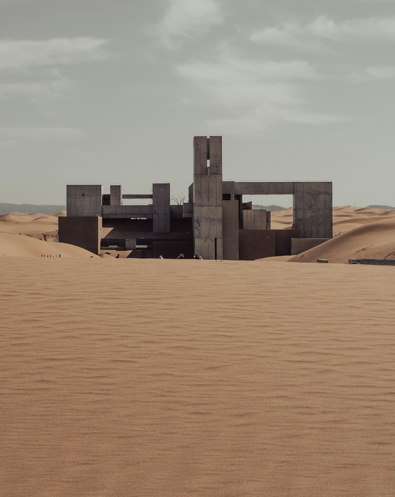
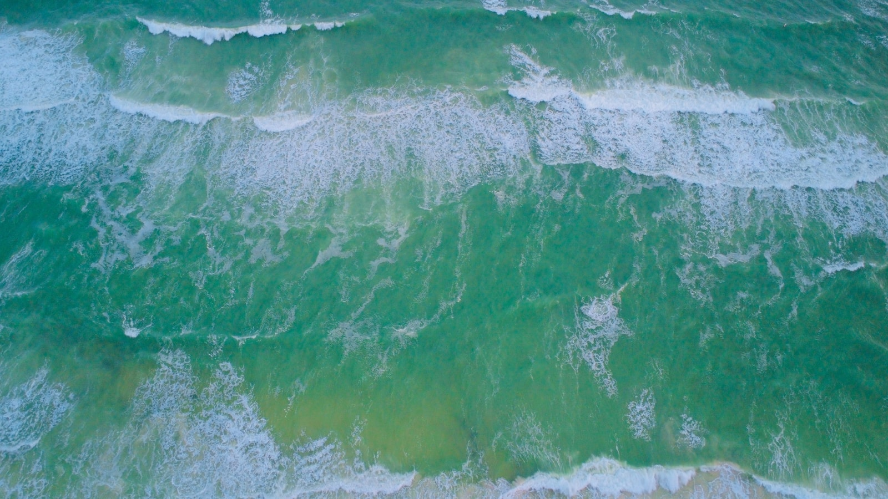

01 IMAGE
让文字，有了画面。
文生图、参考图生图与局部重绘。调整模型和参数，把一个想法发展成更多可能。
OPEN SOURCE · OPEN POSSIBILITIES
想象不必停在脑海。
把它放进画布，
让每一帧继续生长。
01 / THE CREATIVE SPACE
从第一句描述到最后一次调整，
让工具跟上想象的速度。
文生图、参考图生图与局部重绘。调整模型和参数，把一个想法发展成更多可能。
在自由画布中编排素材，检查抠图蒙版，保存创作文档，让作品与上下文留在一起。

画布编排 · 功能示意以参考图作为视频首帧，描述动作与镜头。将素材加入单轨时间线，导出 MP4 成片。

02 / FROM IDEA TO FRAME
生成、编辑与整理自然衔接。
任务状态实时更新，素材随创作文档保存。
下方为流程示意，实际生成由接入的云模型完成。
输入提示词，选择模型与尺寸；也可以添加参考图。
调用已接入的云模型，查看任务进度，再逐步调整画面。
组织图像与视频，保留素材之间的关联和创作上下文。
调整顺序与时长，导出 H.264 / AAC 视频，下载成片。
03 / MAKE IT YOURS
接入外部云模型 API，在统一的工作台中生成、编辑与管理作品。平台组织创作流程，云模型提供生成能力。
自行部署平台：准备 Node.js 20+ 与 Python 3.11+。
以下为 macOS / Linux
启动命令；生成模型通过云端 API 接入。
# 01 获取项目
git clone https://github.com/weilengdezaoshang/aiVideo.git
cd aiVideo
# 02 安装依赖
npm install
python3.11 -m venv .venv
.venv/bin/python -m pip install -r requirements-dev.txt
# 03 启动创作空间
npm run dev打开 http://127.0.0.1:7801/workspace
部署平台后，接入云模型。 按接入文档配置服务地址、模型与 API Key。生成能力及可用参数以所选云模型为准；未配置模型时，Mock 仅用于开发演示。
配置百炼生图这里是静态项目介绍页。部署帧屿集并接入云模型后，即可在工作台创作。GitHub Pages 本身不运行平台 API，也不保存你的创作数据。
不需要。图像与视频生成通过外部云模型 API 完成，无需在本地下载生成模型或配置推理 GPU。需要可用的云服务配置，生成费用按服务提供方规则计算；平台内的抠图与视频导出等处理另由应用服务执行。